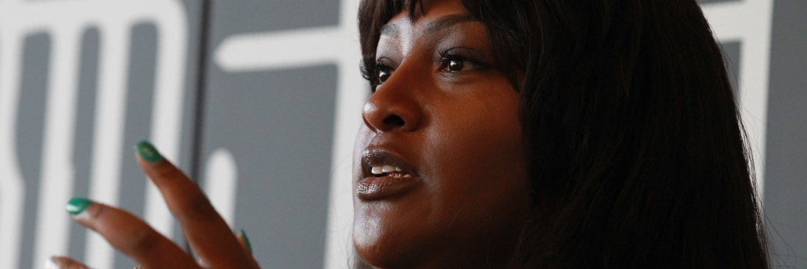

Bootstrappers like Nici Kelly
The voice and skills of all women software engineers matter


Yes, Nici Kelly, bootstrapping a startup is really hard and nobody can tell you what it takes to head an idea toward success. Some say that it's about luck while others say it's about execution and timing but I believe that bootstrapping is about experimenting and learning by acknowledging right at the beginning of every experiment that it might not work and there is not a magic formula that would make the idea that we are bootstrapping become the next Google or Amazon. Seeing this tweet of Nici alias Blackgurltech
Reminded it me how hard it is to try to build something that matters for others as a contribution to the world we are living in. In this entrepreneurial journey scarcity of resources is all-around with lack of money being the most frequent reality as Nici pointed out in her tweet. If we don't have the support network that makes us feel like showing up is possible.
Nici tried to bootstrap carecovr a startup that was intended to expand Childcare benefits with supplemental insurance to protect families at their most vulnerable time. The idea behind carecovr is in my sense a good one even if I had not the opportunity to know more about it because carecovr can now be seen as a startup on the shelve because its woman founder Nici is considering a new path by joining the next startup or company where she could apply the skills and knowledge that she gathered during her 20+ years of experience in tech. It is really important for women like Nici to share their experience because girls out there need strong signals that can show them that they can and they have the right support network that will always make them believe more in themselves. I was a bit desperate when I saw that since a year from now blackgurltech has not published a video on her youtube channel and I think that the voice of every women engineer like M’benda is important for getting more girls into tech and reversing this trend of men like me being the hammer and anvil of the tech industry. Contributions of women software engineers are as more important as contributions of men software engineers and 20 years of experience is a very big professional currency that should makes people like blackgurltech show up and speak and this is more true if they are women.
I have written this article as a signal to tell you and blackgurltech that your voice matter as my words and ask you to not give up speaking whatever your medium of contribution is. Mine is Words while the medium of blackgurltech was youtube. I think that You blackgurltech could restart contributing by publishing on her channel abording whatever topic could interest girls who want to be successful in tech and this is the only goal that I am pursuing with this publication experiment that I have called The Geyio Heart Experiment. As soon as yesterday I was writing a report about this experiment, crunching number from here to here to see how successful it is and I should say thank you all these great women software engineers like blackgurltech that I have covered

because 70% reacted positively to my contribution and made me more motivated to write again at the point of starting a book project about diversity in tech that I am tempted to title Search Engine for Mbenda. If this book doesn't succeed it's fine because I have already won a lot from this motivation for writing that you have amplified in me. Writing is something I care about and I am actually studying the impact of writing, which I see as being a technological product, on our economy and how writing could be used in today's organizations to make them more successful. I will be publishing these articles about writing in The cooperative a Medium publication that I have recently joined as a writer but it will probably not be before I share with you this analytic report about the greyio Heart experiment that I am actually preparing in order to show you how you women software engineers that I have written about and you reader who is actually reading me have helped me make a claim for more girls in tech.
If you have a means to do it, please tell to blackgurltech to not give to take her smartphone or her digital camera and to produce and publish videos that could help not only girls have a better path in tech but also men like me
PS: the message in this tweet below is an example of what the Greyio Heart Experiment isn't about